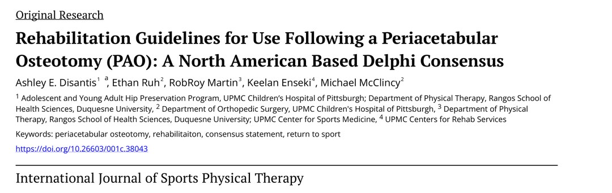
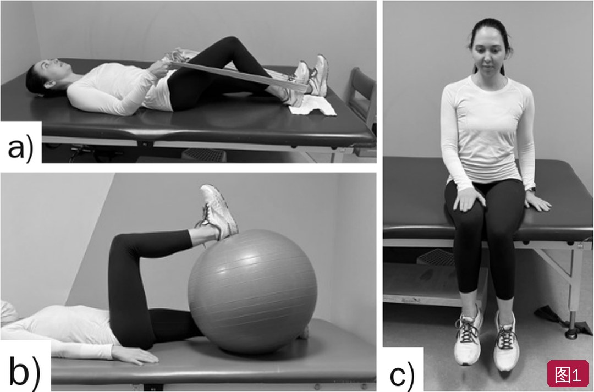
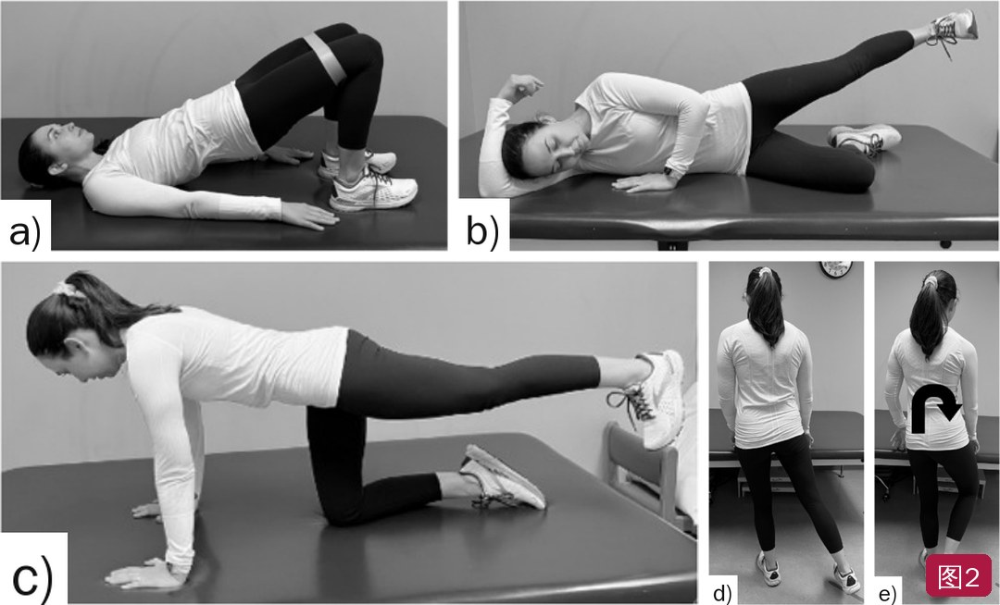
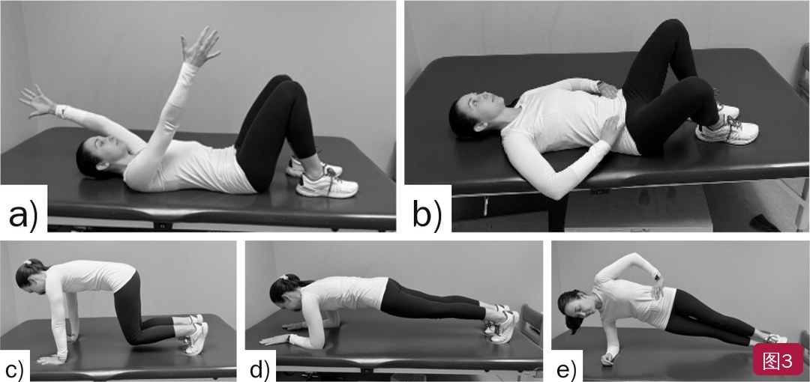
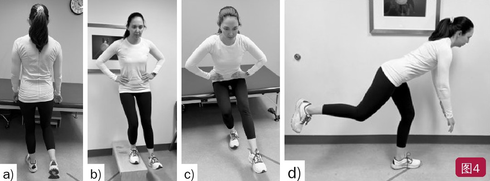

🔖原文首页（IJSPT 2022 年第 17 卷第 6 期）
📚 文献卡片
▪ 英文原题：Rehabilitation Guidelines for Use Following a Periacetabular Osteotomy (PAO): A North American Based Delphi Consensus（髋臼周围截骨术后康复指南：北美德尔菲共识）
▪ 作者：Ashley E. Disantis · Ethan Ruh · RobRoy Martin · Keelan Enseki · Michael McClincy
▪ 机构：UPMC 匹兹堡儿童医院青少年与青年髋关节保留项目；杜肯大学 Rangos 健康科学学院物理治疗系；UPMC 运动医学中心；UPMC 康复服务中心
▪ 期刊：International Journal of Sports Physical Therapy（IJSPT）
▪ 年卷期：2022;17(6):1002-1015
▪ PMCID：PMC9528724
▪ 文章类型：原创研究（德尔菲共识）
▪ 关键词：periacetabular osteotomy · rehabilitation · consensus statement · return to sport
髋臼发育不良是指髋臼骨性结构异常、对股骨头覆盖不足，是年轻人髋痛的常见原因。它会减少髋关节接触面积、加速关节软骨磨损和盂唇退变，处理不当会导致严重疼痛、功能障碍和早发骨关节炎。
髋臼周围截骨术（PAO）能改善长期结局，是 35 岁以下有症状髋臼发育不良的金标准。但术后康复几乎没有研究支持，各家做法差异很大。而康复不到位，力量缺陷可能长期存在：术后 1 年，屈髋和外展等长力量虽然比术前好，但仍比健康人低 13%～34%。
本研究请 16 位来自美国和加拿大的 PAO 康复专家，通过三轮德尔菲调查，就术后负重、活动度、训练处方和重返跑步/运动标准达成共识，以减少临床做法的差异。
| 主题 | 共识 | 同意率 |
|---|---|---|
| 负重 | 25% 体重平足负重 6～8 周 | 94% |
| 脱拐 | 看步态偏差 + 手术医生同意（影像学愈合） | 100% |
| 活动度限制 | 屈髋 ≤90°、屈髋 90° 位外旋 ≤20°，维持 4～6 周 | 81% |
| 全范围活动度 | 12～16 周恢复 | 100% |
| 末端牵伸 | 8～12 周开始 | 94% |
| 屈髋肌群 | 长力臂主动屈髋限制 8～12 周；4～8 周起等长、短力臂训练 | 100% |
| 腰盆/臀中肌 | 非负重等长 → 抗阻 → 双腿/单腿负重 | 94%～100% |
| 有氧训练 | 直立固定自行车 6～8 周；椭圆机 10～12 周 | 81% |
| 开始跑步 | 髋力量正常（重点臀中肌和外旋肌）+ 功能任务表现 | 88% |
| 重返运动 | 患侧/健侧髋外展力量比 >80% + 功能任务 + 专项动作 | 100% |
一句话概括：前 6～8 周保护截骨端（25% 平足负重），8～12 周内别做长力臂主动屈髋，约 20 周开始跑，26 周以后回赛场。
• 专家组：16 位物理治疗师，分布在美国和加拿大不同机构；入选条件包括每年治疗 ≥10 例 PAO 术后患者、被高手术量髋关节保留外科医生认定为专家，和/或非关节炎髋病康复专家
• 专家之间全程互相不知道身份；研究经伦理委员会豁免
• 共识标准：事先定为 ≥75%（中等程度，考虑到该领域证据少、预期分歧较大）
• 第 1 轮：11 个开放问题自由作答；≥50% 专家提到的答案为“众数答案”，≥25% 为“第二梯队答案”
• 第 2、3 轮：对众数答案表示同意或不同意，可增删条目；不同意时须写明理由
• 结果：三轮均 100% 参与，11 个问题全部达成共识
第 1 轮的 11 个问题
| # | 问题 |
|---|---|
| 1 | 用什么负重限制？用哪些客观指标决定脱拐？ |
| 2 | 术后用哪些活动度限制？维持多久？预计何时恢复全范围活动度？ |
| 3 | 如何开始、何时开始屈髋肌群的康复？ |
| 4 | 是否限制长力臂主动屈髋？限制多久？ |
| 5 | 用哪些训练改善下肢的腰盆控制？ |
| 6 | 用哪些训练强化臀中肌？强化臀中肌时避免哪些训练？ |
| 7 | 用哪些训练促进腰盆神经肌肉控制？何时开始？ |
| 8 | 何时开始末端牵伸？ |
| 9 | 何时开始低强度有氧训练（如直立固定自行车、椭圆机）？ |
| 10 | 用哪些客观指标判断患者可以开始跑步？ |
| 11 | 用哪些标准判断患者可以完全重返运动？ |
共识要点 术后 6～8 周内患侧 25% 体重平足负重；影像学显示骨愈合、步态恢复正常后再脱拐。
• 15/16（94%）同意：负重限制为 25% 体重平足负重，持续 6～8 周；合并髋关节镜或微骨折等手术时可能要延长
• 16/16（100%）同意：脱拐看步态偏差（如 Trendelenburg 步态、外展肌代偿步态、疼痛步态）和手术医生同意
• 为什么要限制：文献报告 PAO 术后应力性骨折发生率 2%～18.4%；危险因素包括过早负重、耻骨不愈合、术前畸形大、年龄大、术后中心边缘角大
• Ito 等：术后立即完全负重比 2 个月保护性负重，坐骨支和后柱骨折更多
• 正常骨盆的负荷主要经耻骨上支传递；PAO 后更多经耻骨下支、坐骨和后柱传递，这些部位应力增加，容易发生应力性骨折
共识要点 屈髋和外旋活动度保护 4～6 周，之后无痛渐进恢复；8～12 周可按耐受开始末端牵伸，12～16 周恢复全范围活动度。
• 13/16（81%）同意：屈髋 ≤90°、屈髋 90° 位外旋 ≤20°，维持 4～6 周；合并髋关节镜或微骨折时，可能还要限制伸髋和内旋
• 两位反对者：一位主张前 3 周屈髋 ≤70°、第 4 周 ≤90°，屈髋位不旋转股骨，前 4 周不伸髋；另一位主张屈髋不超过 90°、任何角度都不外旋
• 16/16（100%）同意：单纯 PAO 后 12～16 周（3～4 个月）恢复全范围活动度
• 15/16（94%）同意：8～12 周按耐受开始末端牵伸；一位认为 16 周后按需进行
• 原理：末端屈髋使股骨与髋臼靠近，外旋牵拉前关节囊；先保护，待炎症减轻、骨愈合后再循序恢复，避免刺激关节
共识要点 屈髋肌群要谨慎渐进加载：4～8 周按疼痛情况开始等长和短力臂辅助主动屈髋；长力臂主动屈髋避免 8～12 周。
16/16（100%）同意以下方案：
• 单纯 PAO 后，仰卧位长力臂主动屈髋限制 8～12 周
• 针对屈髋肌群的训练在 4～8 周按疼痛耐受开始
• 从辅助主动活动（AAROM）、足跟滑动和/或等长收缩开始，按耐受进阶
为什么要特别保护髂腰肌
• 髂腰肌紧贴股骨头前方走行，是髋关节的次级稳定肌；髋臼发育不良时它会代偿骨性稳定的不足，导致肌腱过载、炎症和疼痛
• 臀中肌无力（发育不良患者常见，也是 PAO 的后果）与髂腰肌腱炎有关
• PAO 后髂腰肌可能在耻骨截骨处撞击，更容易受激惹
• 所以早期避免足尖点地或不负重步态，用平足步态减少髂腰肌活动
• 强化臀中肌时也要避开会激活前髋的动作：Philippon 等发现外旋位侧卧外展和蚌式开合的屈髋肌肌电激活明显，有前髋痛时应避免或谨慎使用

🔖图1：髂腰肌渐进加载——足跟滑动（a）、瑞士球屈髋（b）、坐位等长屈髋（c）（原图各分图间留白较多，已重新排版）
共识要点 腰盆强化在术后早期从非负重开始，按耐受进阶到双腿、单腿负重训练。
• 16/16（100%）同意：核心进阶应包括仰卧和四点跪位训练
• 15/16（94%）同意臀中肌强化原则：从等长开始 → 非负重抗阻 → 双腿和单腿负重；可以变换体位和力臂进阶；开始阶段避免会增加前髋激活/疼痛的动作（屈髋肌和阔筋膜张肌代偿）
• 一位反对者主张：等长 → 功能动作 → 负重训练
• 女性髋外展、外旋力量本来就弱于男性，而髋发育不良多见于女性，术后腰盆力量又落后，所以充分强化非常关键
• Snyder 等：针对髋外展和外旋肌的强化训练能改变下肢关节负荷；髋发育不良患者强化髋外展肌可减少步行时的动态不稳
• PAO 改变了髋臼方向，会影响周围肌肉的力矩产生能力；臀中肌在单腿站立时肌电值高，合适时应以单腿站立位训练为重点

🔖图2：推荐的髋后外侧强化训练——双腿臀桥 + 等长髋外展（a）、中立旋转位侧卧等长髋外展（b）、四点跪位等长伸髋（c）、站立髋外展（d）、负重位髋外旋（e）（已重新排版）

🔖图3：推荐的腰盆强化训练——屈膝仰卧腹横肌收缩 + 上肢前屈（a）、屈膝仰卧腹横肌收缩 + 屈膝外倒（b）、原始俯卧撑（c）、前平板支撑（d）、侧平板支撑（e）（已重新排版）
共识要点 腰盆神经肌肉控制训练在术后早期从非负重开始，6～8 周或获准负重后进阶到负重训练；负重训练以双腿和单腿动作为主，挑战额状面和股骨内旋控制。
• 14/16（88%）同意：闭链下的双腿和单腿训练，挑战额状面控制和股骨内旋（外翻）控制；可在非负重时按耐受开始，6 周或获准负重后进阶到负重
• 一位反对者主张先在四点跪、高跪等“被动负重”体位练，再进阶到双腿、单腿
• 腰盆神经肌肉控制差 → 躯干失控、下肢外翻，下肢损伤风险增加；女性落地和转身时外翻更明显
• Myer 等：10 周针对性神经肌肉训练使健康人髋外展力量提高 15%；Hewett 等：髋外旋力矩改善、躯干屈曲峰值增加
• 术后早期就要教育患者认识腹横肌的作用；从仰卧 → 四点跪 → 高跪 → 双腿/单腿站立进阶

🔖图4：推荐的腰盆与下肢神经肌肉控制训练——单腿站立（a）、侧向下台阶（b）、单腿蹲（c）、单腿罗马尼亚硬拉（d）
共识要点 直立固定自行车 6～8 周开始，椭圆机 10～12 周开始。重返运动测试结合力量、耐力和功能表现指标，包括但不限于髋外展/内收力量比、Y 平衡测试和各种单腿跳测试。
• 13/16（81%）同意：直立固定自行车 6～8 周、椭圆机 10～12 周；反对者中有人主张第 2 周就可以无阻力骑车、第 4 周泳池步行
• 14/16（88%）同意开始跑步的指标：髋力量恢复正常（重点臀中肌和外旋肌）+ 功能任务表现（单腿蹲、Y 平衡等）；两位反对者认为还需要股四头肌/腘绳肌力量，以及手术医生结合影像学同意
• 16/16（100%）同意重返运动标准：患侧/健侧髋外展力量比 >80%；功能任务表现（单腿蹲、Y 平衡）；按患者需求选择的专项动作表现
• Heyworth 等：PAO 术后 80% 患者重返运动，中位时间 9 个月，其中 73% 回到原水平；疼痛加重是延迟重返的唯一独立预测因素
• Takahashi 等：72.2% 患者能参加低冲击和高冲击运动（这两项研究都没有交代康复方案）
• 心理准备也要考虑：动机、信心和恐惧与能否回到原水平有关；髋发育不良症状持续多年、手术创伤大，患者常信心不足、心存恐惧
表1 PAO 术后康复指南汇总
| 第一阶段：术后即刻期 第 1～4 周 | |
| 目标 | • 保护愈合组织和截骨部位 • 减轻术后疼痛和炎症 • 借助合适的助行器恢复正常步态 |
| 注意事项 | • 负重：25% 体重平足负重 • 活动度：屈髋 ≤90°；外旋 ≤20° • 长力臂主动屈髋禁忌至第 8～12 周 |
| 治疗措施 | • 踝泵和次最大髋部等长训练 • 冷疗和加压，控制炎症和水肿 |
| 第二阶段：术后早期 第 4～6 周 | |
| 目标 | • 温和推进活动度 • 继续保护截骨部位 • 活动增加时，减少对周围软组织的刺激 |
| 注意事项 | • 负重：25% 体重平足负重 • 活动度：屈髋 ≤90°；外旋 ≤20° • 长力臂主动屈髋禁忌至第 8～12 周 |
| 物理治疗 | • 各方向次最大等长训练 • 髂腰肌腱渐进加载是避免肌腱炎的关键 • 短力臂主动/辅助主动活动 • 仰卧位腰盆神经肌肉控制训练 |
| 第三阶段：初期强化期 第 6～12 周 | |
| 目标 | • 活动度接近完全、两侧对称 • 提高髋部和核心力量及神经肌肉控制 • 逐步增加负重（步态正常且医生同意后才能撤掉助行器） |
| 注意事项 | • 训练和负重进阶时，留意关节内、外刺激症状 • 避免过早脱拐 • 长力臂主动屈髋禁忌至第 8～12 周 |
| 物理治疗 | • 逐步恢复功能性活动度 • 6～8 周开始直立固定自行车 • 10～12 周按耐受开始椭圆机 • 8～12 周开始牵伸进阶 • 开始闭链强化进阶 • 推进腰盆稳定和姿势控制训练 |
| 第四阶段：进阶强化期 第 12～20 周 | |
| 目标 | • 提高肌肉耐力和心肺耐力 • 开始为专项活动重建神经肌肉控制 |
| 注意事项 | • 训练进阶时避免诱发症状 • 不跑、不跳、不单腿跳、不变向/转身 |
| 物理治疗 | • 推进多方向髋部和下肢强化 • 进阶到末端力量训练，强调下肢和骨盆的动态控制 • 核心稳定进阶，满足专项需求 |
| 第五阶段：恢复低冲击活动 第 20～26 周 | |
| 目标 | 能耐受跑步和直线敏捷训练，腰盆和下肢控制良好 |
| 注意事项 | • 训练进阶时避免诱发症状 • 不跳、不单腿跳、不变向/转身 |
| 物理治疗 | • 开始跑步和敏捷进阶，强调骨盆和下肢的动态控制 • 继续高水平力量和控制训练，重点骨盆和下肢肌群 |
| 第六阶段：完全重返运动 第 26 周以后 | |
| 目标 | • 能耐受跳、单腿跳、变向/转身训练，腰盆和下肢控制良好 • 完全重返运动 |
| 注意事项 | 训练进阶时避免诱发症状 |
| 物理治疗 | • 开始双腿跳和单腿跳进阶，强调下肢和骨盆的动态控制 • 专项变向和转身训练，强调下肢和骨盆的动态控制 |
注：原表把最后两个阶段都标为“第五阶段（Phase V）”，此处按顺序译为第五、第六阶段。A/AAROM：主动/辅助主动活动；WB：负重
表2 作者推荐的客观标准：开始直线跑步
| 类别 | 标准 |
|---|---|
| 活动度 | • 各方向活动度接近完全、两侧对称 |
| 力量测试 | • 所有髋部和核心肌群徒手肌力 5/5 |
| 耐力测试† | • 前平板支撑 45 秒 • 侧平板支撑 45 秒 • 鸟狗式保持 30 秒 • 侧卧髋外展 30 次 • 俯卧屈膝伸髋 30 次 • 负重位骨盆旋转 30 次 |
| 功能测试† | • 自重 8 英寸（约 20 cm）侧向下台阶 10 次 • 自重单腿蹲 10 次 • 向前和侧向跨步-停稳 30 次 • Y 平衡测试肢体对称性 85% • 自选速度步行 15 分钟 |
表2（续） 作者推荐的客观标准：完全重返运动
| 类别 | 标准 |
|---|---|
| 自评功能 | • 髋关节结局评分—日常活动分量表 >95% • 髋关节结局评分—运动分量表 >90% |
| 力量与活动度 | • 完全且两侧对称 |
| 功能测试† | • 负重 20% 体重 8 英寸侧向下台阶 10 次 • 负重 20% 体重单腿蹲 10 次 • Y 平衡测试肢体对称性 >90% |
| 关节负荷任务† | • 单腿向前跳 • 单腿三级跳 • 单腿交叉三级跳 • 单腿内/外侧跳 • 6 米计时单腿跳 |
| 专项任务† | • 改良 T 型敏捷测试 • 治疗师选择的 3 项专项训练 |
†所有任务中都要求无疼痛，且下肢和骨盆控制良好
• 方法亮点：三轮德尔菲 100% 参与、全部问题达成共识，专家来自北美多家机构；明确报告了每条共识的同意比例和反对意见
• 证据性质：专家意见，没有患者结局数据验证；共识阈值 ≥75% 属中等，作者也承认问题由专家意见生成，可能有偏倚
• 适用范围：只针对单纯 PAO；合并髋关节镜、微骨折或翻修时需调整（原文提到可能要额外限制伸髋和内旋）；专家都来自北美，国际推广性有限；线上作答无法讨论澄清
• 表 1 与表 2 来源不同：表 1 是共识汇总；表 2 明确写的是“作者推荐”，不是专家组投票结果，引用时要区分
• 原文小瑕疵：方法部分写“用于确立儿童 ACL 损伤诊断评估的共识”，明显是沿用旧稿未改；表 1 出现两个“第五阶段”；关键词“rehabilitaiton”拼写错误；表 1 第一阶段“禁忌至 8～12”漏了“周”
• 数字小差异：神经肌肉控制的共识条目写“6 周进阶到负重”，讨论部分写“6～8 周”；重返运动讨论提到“星形偏移平衡测试”，而表 2 用的是 Y 平衡测试（二者相关但不完全相同）
① 第 0～6/8 周：25% 体重平足负重；屈髋 ≤90°、外旋 ≤20°（4～6 周）；不要足尖点地
② 第 4～8 周：髂腰肌从等长、足跟滑动、短力臂辅助开始加载；长力臂主动屈髋避免到 8～12 周
③ 第 6～12 周：影像学愈合 + 步态正常后脱拐；6～8 周固定自行车，10～12 周椭圆机，8～12 周末端牵伸
④ 第 12～20 周：12～16 周恢复全范围活动度；多方向强化，单腿控制，暂不跑跳
⑤ 第 20～26 周：达到跑步标准后开始跑步和直线敏捷
⑥ 第 26 周以后：髋外展力量比 >80%、Y 平衡对称性 >90%、单腿跳测试过关后，完全重返运动
欢迎关注悦美力公众号，获取更多物理治疗的专业知识！
📄参考文献：
Disantis AE, Ruh E, Martin R, Enseki K, McClincy M. Rehabilitation Guidelines for Use Following a Periacetabular Osteotomy (PAO): A North American Based Delphi Consensus. Int J Sports Phys Ther. 2022;17(6):1002-1015. PMCID: PMC9528724.
文中图片均来自原文（图中仅有 a～e 字母，分图已重新排版），表 1～2 已译为中文，仅用于学术交流。